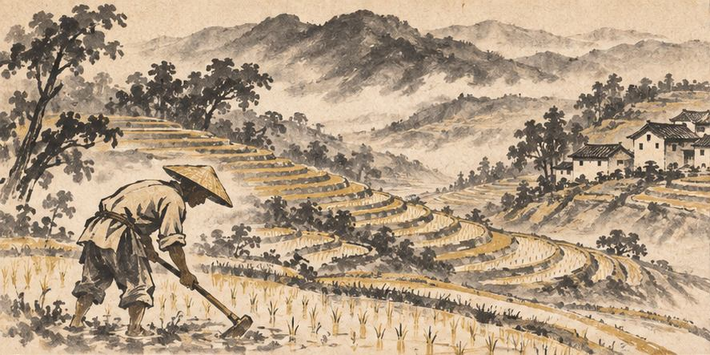
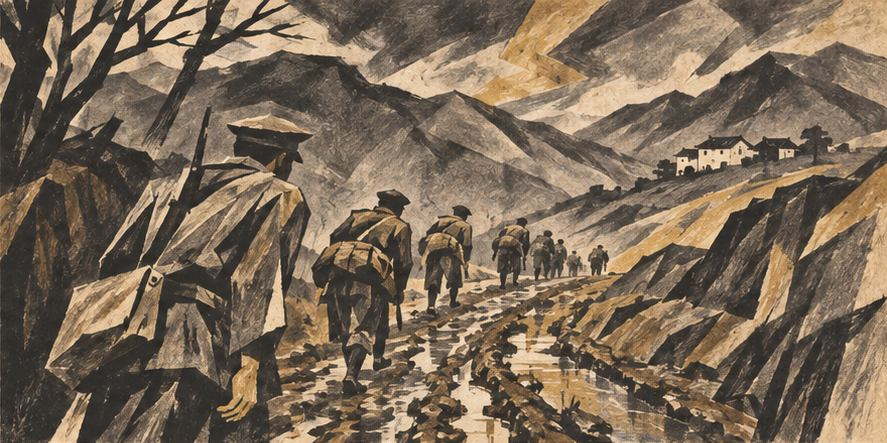
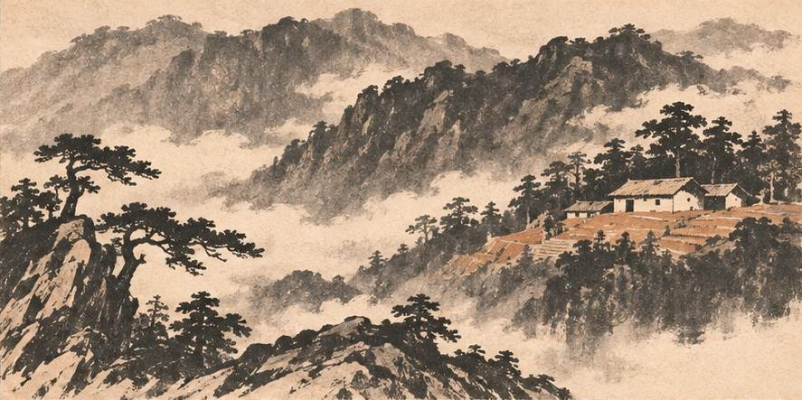
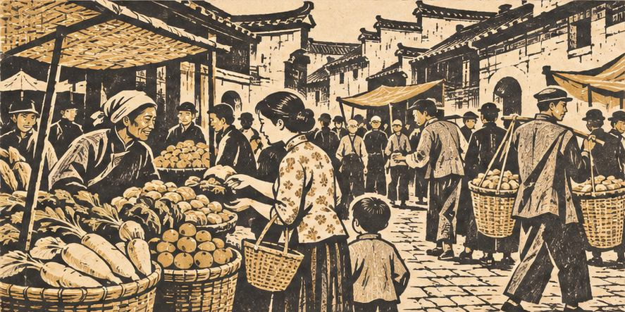
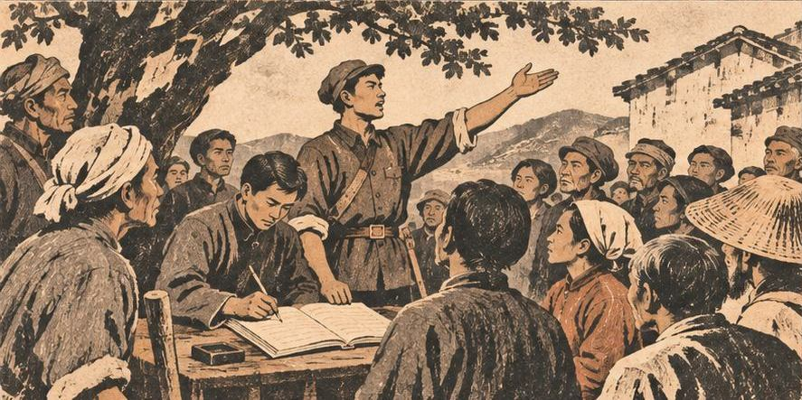
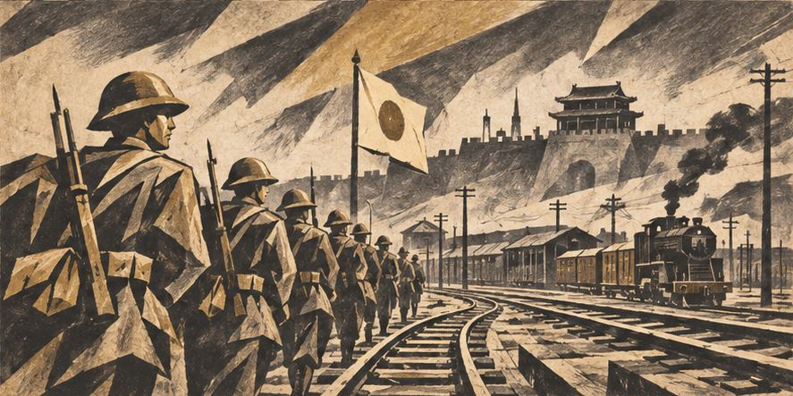
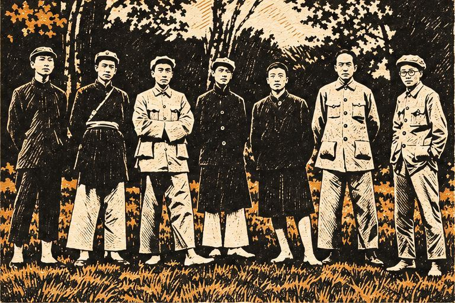

HIST 270 · Chapter 25 · Block 2
1927–1931
How did rural refuge become territory the Communists could govern?

Guohua-inspired landscape1927 · After Shanghai and Wuhan
Concept · Peasant
Peasants are rural people who work the land.
Some own plots, some rent the land they farm, and some work for wages.
Concept · Rural organizing
Organizers helped villagers coordinate around questions of rent, land, debt, and local authority.
Rural networks could also provide recruits and supplies.
September 1927 · Hunan

October 1927 · Jinggangshan

Concept · Base area
A base area is territory where a movement can recruit, gather supplies, and administer villages.
A durable base depends on access to local people and resources.
1929 · Jiangxi and Fujian

Concept · Land reform
Land reform changes the rules of land ownership.
Redistribution transfers land from some households to others.
Concept · Landlord, tenant, laborer
A landlord collects rent on land others farm.
A tenant rents the land they farm.
A farm laborer works for pay.
1929–1931 · Village government

Concept · Red Army
The Red Army defended Communist territory and drew recruits and supplies from rural bases.
Organizers and armed forces depended on one another.
Concept · Manchuria
September 1931 · Mukden

Concept · Soviet
The word soviet means council.
Jiangxi Soviet refers to the Communist base area that developed around Ruijin in southern Jiangxi and nearby districts.
November 1931 · Ruijin

1931 · Synthesis
Quiz · Ten questions
Answer ten multiple-choice questions on today’s lecture, Mao Builds a Rural Base in Jiangxi. Click one answer for each question. You can change an answer any time.
Your answers save automatically as you click. When you finish, click Download .txt and submit the file on Canvas.
Heads up: Autosave only works in this same browser on this same device. If you might switch computers or browsers, click Download .txt partway through to keep a backup.
Quiz · Questions 1–2
Quiz · Questions 3–4
Quiz · Questions 5–6
Quiz · Questions 7–8
Quiz · Questions 9–10
Finished? Click Download .txt and submit the file on Canvas.